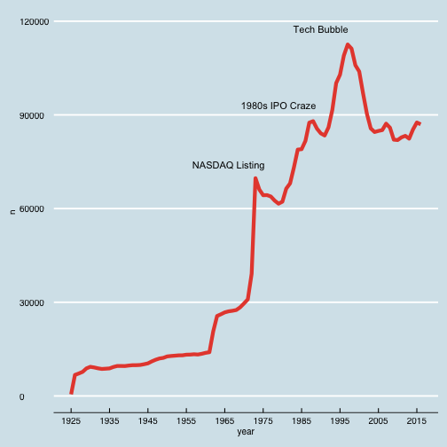

Getting WRDS CRSP Data
Posted on Mon 17 July 2017 in tech
Wharton Research Data Services (WRDS) is the standard finance and accounting data source for academic research. WRDS is composed of many individual datasets provided by different vendors. The two most commonly used are Compustat (for accounting data) and CRSP (for stock data). In this post we will be focusing on getting CRSP data but the process for getting Compustat data (or any other dataset) is the same.
The Center for Research in Security Pricing (CRSP) is a University of Chicago service to provide accurate, historical stock data. The dataset extends to December 1925 and new data is typically added 3-6 months ex post. The monthly dataset (which we will be using) currently has over 4 million firm-month observations. CRSP data is not one monolithic dataset. Instead it is over a hundred different datasets each holding different slices of data. The way these datasets are connected is a key difference between the two ways of extracting data from WRDS.
1 Point and Click Web Interface
The most straightforward method of retrieving CRSP data is by using the point-and-click web query on the WRDS website. Simply navigate to the database you want, specify the time period, the company (or companies you want), select the variable, then choose the data format you want (csv, dta, xlsx, etc.). This entire process can be saved as a query with a specific name for later reference.
Pros
-
The biggest advantage is easily combining datasets. When selecting variables using the query form, you will notice that are dozens of variables. These variables are actually coming from multiple datasets that WRDS will automatically merge together. For example, GICs industry codes is not from the monthly stock file but a different, historical-information dataset.
-
As mentioned above, queries can be saved for later use.
-
Hassle free: no programming experience required.
Cons
- No-automation: saved queries are as close to automation as possible
2 Command Line
Although we'll be saving the automation part for another post (there is preliminary work to be done first that we'll go over here), it's important to know why automation might be useful. Say you have a research idea and you get your WRDS, process it, analyze, and type a preliminary paper. You shop the paper around to others who might help, get some feedback, present at conferences, etc. Now it's been a year since you did your first analysis and there is an additional year of data on CRSP. With the web query format you would have to go back and do the entire process over again. With an automatic process, a single command could update your data and run your analysis and generate a new paper (assuming you're using reproducible research method like R and knitr/rmarkdown).
The pros and cons for the command line method are flipped from the point-and-click method. The biggest disadvantage is that to get many of the variables you want (like GICs) you need to merge in data from multiple datasets. The key challenge here is that it is not entirely obvious what these databases are called and where they are from. The point-and-click interface takes care of a lot of work for you in this regard.
That being said, once you do have your query down pat (meaning you know the variables and databases you need), the entire process could be automated. But to get there we first have to get our pipeline established. We will be using a combination of R+bash+PostgreSQL. PostgreSQL is a relational database that is a very easy, commonly used method of storing and accessing data.
The steps I use will be drawing heavily from two sources: (1) official WRDS hints and (2) a helpful post on integrating PostgreSQL into R.
- Download PostgreSQL: for MacOS, the easiest method is using the Postgres.app
- Setup your environment on the WRDS server
- Extract and save your data
- Download to your computer
- Upload to a
PostgreSQLdatabase.
2.1 Download PostgreSQL
To use Postgres.app you must not have any previous installation of Postgres on you computer. Installation and setup is a breeze. We will be using the initial database that uses localhost, port 5432, and the user and database named with your system user name.
2.2 WRDS Server Environment
The R environment on your personal node on the WRDS server needs to be setup in order to query the data using R. This requires you to ssh into the server and edit the .Rprofile and .Renviron files. There are several text editing tools available to do so. The most 'normal' (i.e., not like vim) is nano. Additionally, you will need to encode your password using SAS following the hints page.
ssh <user_name>@wrds-cloud.wharton.upenn.edu
#then enter your password
nano .Rprofile
Once you have opened the blank .Rprofile page, copy-paste the following code and replace the username and password.
# .Rprofile
library(rJava)
.jinit(parameters="-Xmx8g")
library(RJDBC)
user <- "my_username"
pass <- '{SAS002}DBCC5712369DE1C65B19864C1564FB850F398DCF'
wrdsconnect <- function(user=<user_name>, pass=<password>){
drv <- JDBC("com.sas.net.sharenet.ShareNetDriver", "/usr/local/sas/jdbc_driver/sas.intrnet.javatools.jar", identifier.quote="`")
wrds <- dbConnect(drv, "jdbc:sharenet://wrds-cloud-h.wharton.private:8551/", user, pass)
return(wrds)
}
.First <- function(){
wrds <<- wrdsconnect(user=user, pass=pass)
}
.Last <- function(){
dbDisconnect(wrds)
}
After saving and exiting (ctrl+x), type the following to edit your .Rprofile.
nano .Renviron
Copy-paste the following into your .Rprofile.
# .Renviron
CLASSPATH="/usr/local/sas/jdbc_driver/sas.core.jar:/usr/local/sas/jdbc_driver/sas.intrnet.javatools.jar"
2.3 Extracting Data
Now that the environment is setup, type the following two commands to enter an R session:
qrsh #launch the wrds shell
R #start an R session
Run the following code to download the entire monthly CRSP file and write it to a csv.
sql <- "select * from CRSP.MSF" #the query to be passed to WRDS
res <- dbSendQuery(wrds, sql) #wrds is the connection from the .Rprofile; sql is the query from above
data <- fetch(res, n = -1) #connect, query, and save to data; n=-1 to select all
write.csv(data,"crsp_raw.csv") #write to a csv file
2.4 Download the Data
Now that the data has been saved to our WRDS node, we need to download it to our computer. The easiest way is to ftp the data from WRDS to our computer using the get command.
sftp <user_name>@wrds-cloud.wharton.upenn.edu
get crsp_raw.csv /data/destination/path
2.5 PostgreSQL Setup
Moving data to PostgreSQL is super easy. We will be following Win-Vector's very helpful tutorial.
# read in the crsp data
crsp<-read_csv('crsp_raw.csv')
# Create a connection to the database
library(RPostgreSQL)
library(DBI) #you will not that DBI is also used in the WRDS .Rprofile
## Loading required package: DBI
pg = dbDriver("PostgreSQL")
# Local Postgres.app database; no password by default
# I simply use default database. If you want you could use a special crsp or wrds database.
con = dbConnect(pg,
user=<user_name>,
password="",
host="localhost",
port=5432,
dbname=<user_name>)
# write the table into the database.
# use row.names=FALSE to prevent the query from adding the column 'row.names' to the table in the db
dbWriteTable(con,'crsp',crsp, row.names=FALSE)
Now that we have a CRSP PostgreSQL database, let's read in the data and make a simple chart.
library(tidyverse) #for easy data manipulation
library(lubridate) #for easy date manipulation
library(ggthemes) #for economist theme
# crsp query
crsp_raw <- dbGetQuery(con, "select permno, date, shrout, shrcd, prc, cfacshr, cfacpr, ret, retx from crsp")
# process data using dplyr to get count of observations per year
crsp <- crsp_raw %>%
mutate(year = year(as.Date(date,"%d%b%Y"))) %>%
group_by(year) %>% tally()
# plot the counts by year
crsp %>% ggplot(., aes(x=year, y=n)) + geom_line(size=2,color="#E74C3C") +
theme_economist() +
scale_x_continuous(breaks = round(seq(min(crsp$year), max(crsp$year), by = 10),1)) +
annotate("text",x = 1966,y = 74000,label = "NASDAQ Listing") +
annotate("text",x = 1979,y = 93000,label = "1980s IPO Craze") +
annotate("text",x = 1990,y = 117542,label = "Tech Bubble")
